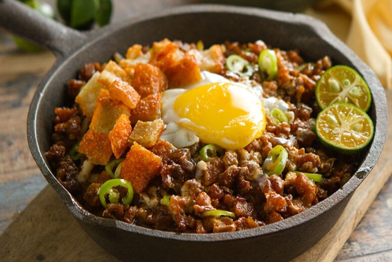

FAVORITE FOODS

Chicken Adobo
A classic Filipino dish of chicken marinated in soy sauce, vinegar, and garlic, then simmered to perfection.
View Food
Pancit
A Filipino stir-fried noodle dish with vegetables, meat, and a savory sauce, perfect for any occasion.
View Food

Sisig
A crispy pork dish with calamansi, chili, and onions, served sizzling for a tasty and crunchy meal.
View Food